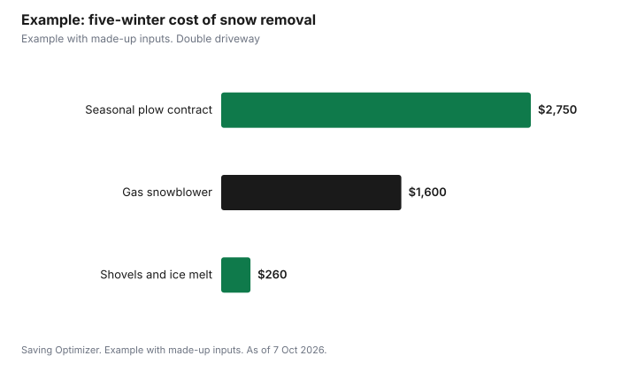

Housing · Canada
Snow Removal Costs in Canada: Shovel vs Snowblower vs a Seasonal Plow Contract
For a short, single-car driveway in a city with a few big storms, a good shovel and an ice scraper are usually the cheapest snow removal option in Canada. A snowblower starts to pay off when the driveway is long or double-wide, storms are frequent, or shovelling is hard on your body. A seasonal plow contract costs the most over time but buys back hours and risk, and it makes sense when you leave early for work, travel in winter, or cannot shovel safely. Whatever you choose, read your city's bylaw: in many places you still have to clear your own walkway and, sometimes, the public sidewalk, within a set number of hours.
Key takeaways
- Shovelling is cheapest in money but costs time and strain.
- A snowblower makes sense for long or wide driveways and frequent storms.
- Plow contracts trade money for time; read the trigger depth and what is excluded.
- Your city's bylaw still applies: steps, walkways and sometimes sidewalks are on you.
- Toronto example: pushing snow onto the road or sidewalk can bring a $500 fine plus a $110 surcharge.
- Example with made-up inputs: five-winter cost of each option.
The three options at a glance
| Shovel | Snowblower | Seasonal plow contract | |
|---|---|---|---|
| Upfront cost | Low | High | None; paid per season or per visit |
| Ongoing cost | Replacement shovel, ice melt | Fuel or charging, maintenance, storage | The contract price, every winter |
| Your time per storm | Most | Less | Least, but you may still clear steps and the windrow |
| Physical strain | Highest | Moderate | Low |
| Best fit | Short driveway, mild winters | Long or wide driveway, many storms | Early starts, travel, health limits |
What you must still clear yourself
A plow contract or a snowblower does not change what your city expects of you. Rules differ widely, so read your own municipality's bylaw before winter. Toronto's rules show the kind of detail to look for. The City says it clears about 98% of all public sidewalks once snowfall reaches 2 cm and has stopped. When snowfall is under 2 cm, residents and businesses must clear the sidewalk next to their property within 12 hours of the end of the snowfall. Property owners must clear driveways, parking spaces, steps, ramps and landings within 24 hours.
Toronto also says residents must not push snow from their property onto sidewalks, roads or bike lanes. Shovelled snow must stay on the property, or the owner could receive a fine of $500 plus a $110 victim surcharge. That rule applies to a contractor clearing your driveway too, so ask where they will pile the snow.
The windrow: the city may help, but not always
The windrow is the heavy ridge of snow a street plow leaves at the end of your driveway. In Toronto, crews use a machine that follows the plows to open a 3-metre-wide driveway opening on eligible residential streets, and on eligible collector and arterial roads when the windrow is more than 25 cm. The City aims to clear it within 2 hours of road plowing, and only clears windrows created by street plowing. Many other cities do not offer this, so check before you assume the end of the driveway will be cleared. If you sign a contract, ask whether the contractor comes back after the city plow passes.
Shovelling: the cheap option, done well
- A wide pusher-style shovel for light snow and a smaller, sturdier one for heavy, wet snow cover most needs.
- Clear after every few centimetres in a long storm rather than all at once at the end.
- Push rather than lift where you can, and bend your knees when you do lift.
- Use ice melt sparingly on steps and walkways, and keep a bag of sand or grit for traction.
- If you have heart problems or other health concerns, ask your doctor whether shovelling is safe for you, and consider one of the other options.
Snowblower: when the machine pays for itself
A snowblower is worth considering when your driveway is long, double-wide or on a slope, when your area gets many significant snowfalls, or when you would otherwise pay a contractor. Battery models are quieter and need less upkeep but have limited run time per charge. Gas models handle deep, heavy snow and end-of-driveway windrows better, but need fuel, oil changes and storage space. Two-stage machines throw heavy snow farther and cost more than single-stage ones.
Count the full cost: the machine, a cover or storage space, fuel or a spare battery, a tune-up every couple of seasons, and your time. Buying at the end of winter, or on Black Friday if the price history supports it, can lower the upfront cost. A used machine can also work if you can test it running before you pay.
Seasonal plow contracts: what to read before you sign
- Trigger depth. Most contracts only come out once snow reaches a set depth. Ask what it is, and whether light snowfalls are your job.
- Seasonal flat rate vs per visit. A flat rate is predictable. Per-visit pricing is cheaper in a light winter and more expensive in a heavy one. Some contracts cap the number of visits.
- Timing. Ask for a target time, for example before a set hour on weekdays, and how they handle overnight storms.
- What is included. Driveway only, or also walkways, steps, the windrow after the city plow, salting and snow piling? Each extra can cost more.
- Damage. Ask how they handle damage to lawns, curbs, interlock or garage doors, and mark your driveway edges with stakes.
- Insurance and workers. Ask for proof of liability insurance and, in Ontario, whether they have WSIB coverage for workers.
- Payment and cancellation. Avoid paying the full season upfront to a company you do not know. Get the contract in writing.
Ontario's Consumer Protection Act gives a cooling-off period for contracts signed with a door-to-door salesperson, and lets you withdraw within 1 year if a business misrepresented its service. Other provinces have similar protections; check your province's consumer office before signing a contract sold at your door.
Example with made-up inputs: five winters
These numbers are an example with made-up inputs, not prices from any retailer or contractor. A household with a double driveway compares three options over five winters. Shovelling costs $60 for two shovels plus $40 a year for ice melt, about $260 in total. A gas two-stage snowblower costs $1,300, plus $60 a year for fuel and maintenance, about $1,600 over five winters. A seasonal contract at $550 a winter adds up to $2,750. Spread over five winters, the snowblower costs about $320 a year and the contract $550 a year.
| Option | Upfront | Per winter | Five-winter total |
|---|---|---|---|
| Shovels and ice melt | $60 | $40 | $260 |
| Gas snowblower | $1,300 | $60 | $1,600 |
| Seasonal plow contract | $0 | $550 | $2,750 |

The money is only part of it. If shovelling takes this household 30 hours a winter and one partner cannot safely shovel, the extra cost of a machine or contract may be worth it. If the snowblower lasts longer than five winters, its yearly cost falls further.
Ways to cut the cost
- Share a snowblower with a neighbour and split the cost and storage, with a simple written agreement on repairs.
- Ask contractors about discounts for neighbours on the same street signing together.
- Sign contracts in the fall, when companies are filling routes, and compare at least three written quotes.
- If you need help because of age or disability, contact 211 for community supports, as Toronto suggests, and ask your city whether it offers any assistance program.
- Keep the driveway edges marked and the area clear of cars on plow days to avoid extra charges or damage.
Common mistakes
- Assuming a contract covers steps, walkways and the windrow when it does not.
- Paying a full season in cash upfront to a contractor with no written agreement.
- Buying a large gas snowblower for a short driveway you could clear in 15 minutes.
- Piling snow on the sidewalk or road, which many cities prohibit.
- Shovelling heavy, wet snow all at once after a long storm.
Related: cutting the winter heating bill and a winter driving emergency kit.
Sources
- City of Toronto, Sidewalk Clearing (98% of sidewalks, 2 cm, 12 and 24 hours, $500 fine plus $110 victim surcharge, 211 Ontario), toronto.ca, page modified 16 Jul 2026, as of 7 Oct 2026.
- City of Toronto, Levels of snow clearing service (driveway windrow openings, 3 metres, 25 cm, 2 hours), toronto.ca, as of 7 Oct 2026.
- Government of Ontario, Your rights under the Consumer Protection Act (cooling-off period for door-to-door agreements; misrepresentation, 1 year), ontario.ca, updated 1 Apr 2025, as of 7 Oct 2026.
- Equipment, ice melt and contract prices in the worked example are made-up inputs.
Frequently asked questions
Is a snowblower worth it in Canada?
It is most likely worth it for a long, wide or sloped driveway in an area with frequent heavy snow, or when shovelling is hard on your health. For a short driveway, a good shovel is usually cheaper.
What should a snow plow contract include?
The trigger depth, a seasonal or per-visit price, target clearing times, whether walkways, steps, salting and the windrow are included, how damage is handled, and proof of insurance.
Do I still have to clear my sidewalk in Toronto?
Toronto says the City clears public sidewalks once snow reaches 2 cm. Under 2 cm, residents clear the sidewalk next to their property within 12 hours, and owners clear driveways, steps and walkways within 24 hours.
Can I push snow onto the road?
Not in Toronto. The City says shovelled snow must stay on your property or you could be fined $500 plus a $110 victim surcharge. Many other cities have similar rules.
Does the city clear the snow at the end of my driveway?
Some cities do. Toronto opens 3-metre driveway windrows on eligible streets, aiming for within 2 hours of plowing. Check your own city's program.
Can I cancel a plow contract signed at my door?
In Ontario, contracts signed with a door-to-door salesperson have a cooling-off period under the Consumer Protection Act. Other provinces have their own rules.
Researched and drafted with AI assistance and fact-checked against official Canadian sources. How we create content.
Disclosure: No snowblower brand, retailer or snow removal company is recommended or ranked. There are no affiliate links on this page and no partnership is claimed. Education only, not legal advice.